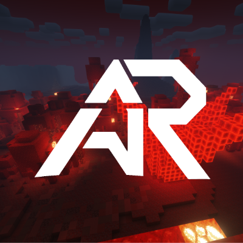

commencer en 2020, Skylonrio est un serveur Minecraft que j'ai développer afin d'acquerrir des compétences. Projet au connaissance Polyvalente on était plusieurs derriere ce projet, j'étais charger du développement des Plugins en JAVA à l'aide des librairie Spigot et Bukkit, ainsi que la création des bases de données avec MySQL ou MariaDB. J'ai aussi appris à faire de la configuration de Plugin proposer par d'autre développeur Minecraft.
étant le fondateur du projet j'ai du organiser une équipe notament à l'aide de diagramme de Ganth, cahier des charges etc... afin de mener le projet à bien et à organiser l'équipe.

Ce projet m'as aussi permis de développer mes compétences de recueil du besoin client, les joueurs avaient des exigences ou bien trouvaient des bugs et me les rapportaient afin que je puisse les résoudre.